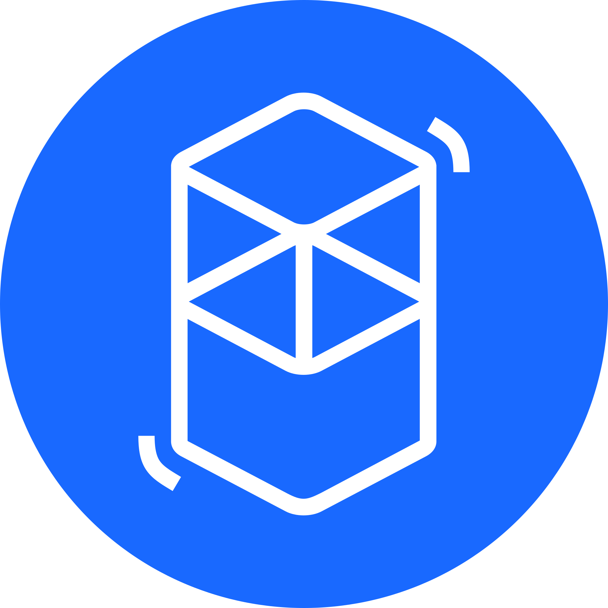

①
Pick a route (bridge protocol + source chain)
You’re choosing both the bridge and the source chain. Most failures are route mistakes (wrong destination or unsupported token).

This is a practical, security-first guide to cross-chain bridging to and from Fantom: how routes work, what fees you pay (source gas + bridge fee + destination gas), how to verify everything on explorers, and how to avoid the classic problems: wrong chain, wrong token contract, approvals to unknown contracts, or “bridge pending” UI confusion.
You’re choosing both the bridge and the source chain. Most failures are route mistakes (wrong destination or unsupported token).
You pay source gas to initiate, and you need destination gas to approve/swap/transfer after arrival (FTM on Fantom).
Confirm the route, token contract, and destination visibility. Don’t “double-send” when the UI is slow.
Explorer verification beats wallet UI caching. Track source tx + destination receipt before taking any action.
A cross-chain bridge moves value between blockchains. In practice, you initiate a transaction on a source chain, a bridge system observes/finalizes it, and a corresponding asset is released/minted on the destination chain. Your job is to get the basics right: correct destination, correct token contract, enough gas, and explorer verification.
Bridge protocol + route + token + destination chain. Treat each as a separate decision.
Wrong chain, unsupported token, no destination gas, fake contracts, and UI “pending” confusion.

Route selection is where most users lose time. Before you send, confirm these items.
| Check | What “good” looks like | What breaks if you ignore it |
|---|---|---|
| Destination chain | Fantom Opera (Chain ID 250) | Funds arrive elsewhere (or you think they’re missing) |
| Token support | Bridge supports the exact token on both sides | Stuck route / wrong asset representation |
| Contract verification | Token contracts verified on explorers | Fake tokens / spoofed contracts |
| Gas planning | You have source gas + destination gas (FTM) | You arrive but can’t move/approve/swap |
Cross-chain cost is rarely “just one fee”. Expect a stack: source gas + bridge protocol fee (if any) + destination gas (FTM). Timing depends on source finality, bridge design, and network conditions.
| Cost area | Paid in | What it covers | Common mistake |
|---|---|---|---|
| Source chain gas | Source gas token | Submitting the bridge tx | Not budgeting gas spikes |
| Bridge fee | Varies | Relayer/protocol fees | Assuming “free” means “instant” |
| Destination gas | FTM | Approvals/swaps/transfers/revokes | Arriving with 0 FTM |
Fantom Opera is commonly configured with Chain ID 250, gas token FTM, and explorer ftmscan.com. Correct network setup prevents most “wrong chain” incidents.
| Parameter | Value | Why it matters |
|---|---|---|
| Network name | Fantom Opera | So you know you’re on the correct destination chain |
| Chain ID | 250 | Prevents wrong-chain transactions |
| Currency (gas token) | FTM | Needed to use bridged funds on Fantom |
| Explorer | https://ftmscan.com | Verification source of truth |
Neutral, reputable resources for bridge analytics, Fantom network setup, and security hygiene.
A Fantom cross-chain bridge is a mechanism to move value between Fantom Opera and other blockchains. Always verify status and token contracts on explorers.
Fantom Opera is commonly configured with Chain ID 250. Confirm using reputable registries or official documentation.
FTM pays gas on Fantom Opera. Keep a buffer for approvals, swaps, transfers, and troubleshooting.
Usually wrong network/account, token not added, or UI caching. Check your address on the destination explorer first and confirm token contracts.
No. Verify your source tx hash on the source explorer and check destination receipts. Resending blindly can create duplicates.
Yes. Depending on the route, you may receive a bridged/wrapped representation. Always confirm the contract address on the destination explorer.
Use minimal approvals, avoid unknown contracts, and revoke allowances after you’re done using bridge-related dApps.
Use FTMScan (ftmscan.com) to verify transactions, token contracts, and balances on Fantom Opera.
Use reputable bridge analytics dashboards to understand flow context, then verify your specific transaction on explorers.
Do a small test transfer, verify it on explorers, confirm token contract legitimacy, then scale size only after the test is clean.